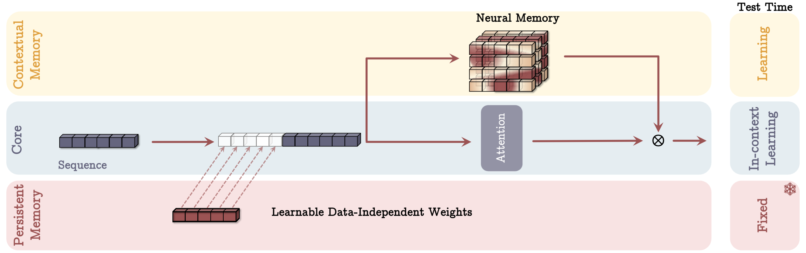
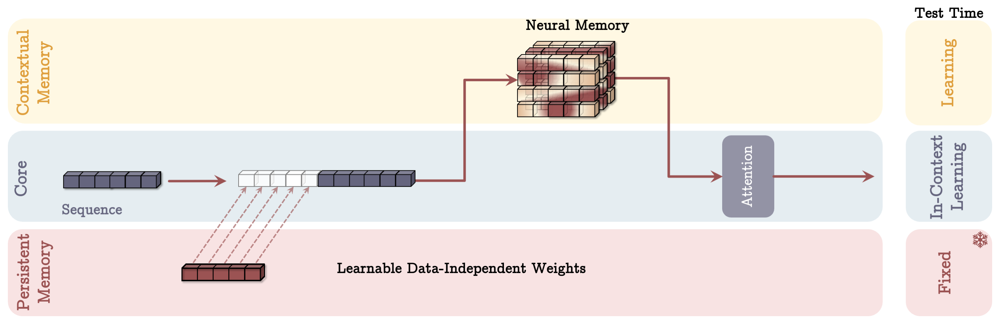
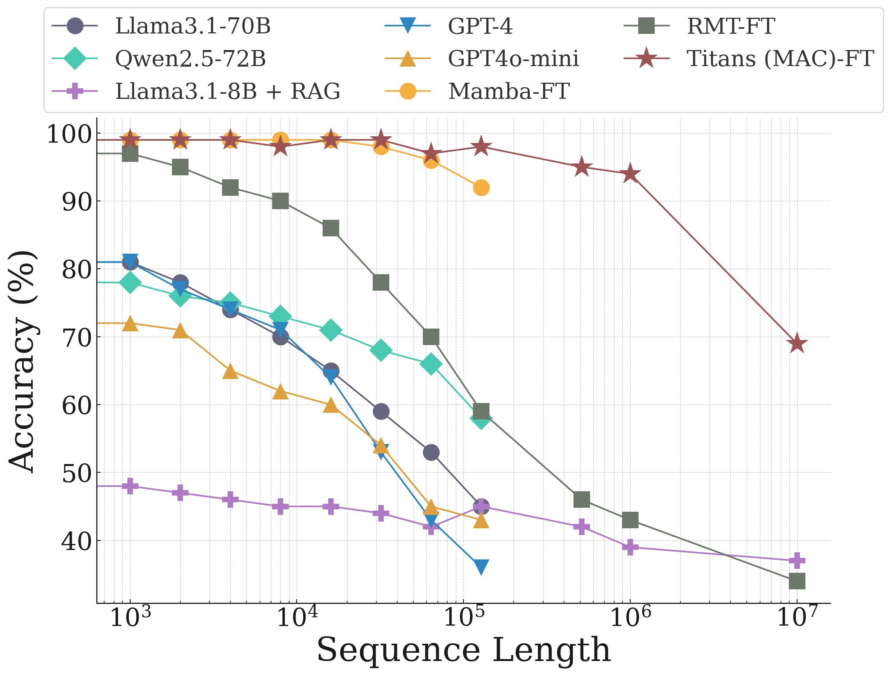

Attention mechanisms and recurrent models each have their strengths and weaknesses:
Attention can attend to the entire context window, but it comes with a high computational cost.
Recurrent models compress the state into a fixed size, but they struggle to model dependencies accurately.
This work aims to combine the best of both worlds by using recurrent attention to capture long-term memory and attention to model short-term memory.
Current approaches often lack some key components of human learning, such as:
Long-term and short-term memory mechanisms
Decoupling of components
Active learning from experience
Abstraction and summarization of past history and experiences
Human Learning Mechanisms
Memory: Neural updates triggered by an input.
Learning: Acquiring effective and useful memory, given an objective.
Why Linear Transformers Outperform RNNs:
they use matrix-valued memory, which has greater expressive power compared to the vector-valued memory used in RNNs.
This leads to five critical questions:
What structure should memory take?
What is a proper memory update mechanism?
What is a good memory retrieval process?
How can different memory components be integrated?
Is a deep memory module needed to effectively store long-term memory?
We introduce a system that can efficiently and effectively learn to memorize at test time, addressing the above questions and combining the strengths of attention and recurrent models.
Background
Attention and Linear Attention
Add Forget Gate to Memory Update: To address the additive nature of memory write operations, a forget gate can be introduced into memory update.
Fast Weight (1990s): This approach divides the network into slow weights and fast weights. Fast weights are used to store short-term memory and can be read and written at each time step. The learning rules for fast weights can be based on:
Hebbian Learning: often summarized as “fire together, wire together,” strengthens the connection between neurons that are activated simultaneously.
Delta Rule: DL Prados and SC Kak. “Neural network capacity using delta rule”. In: Electronics Letters 25.3 (1989), pp. 197–199.
Long-Term Memory
Typically, memory is seen as a double-edged sword. If a model memorizes the training data too well, it may suffer from poor generalization and struggle with out-of-distribution data.
We need a model that can dynamically memorize or forget information at test time. Therefore, the model is learning a function that is capable of memorization, an online meta-model that learns how to memorize/forget the data at test time.
How to Train a Memory Module M?
The memory module M needs to learn how to update its memory.
M is a meta-model that serves as the memory module. “Meta” here means it updates itself during test time.
Gradient Descent with Momentum: While the update mechanism is essentially gradient descent with momentum, it can be understood through the concept of “surprise.”
Humans are more likely to remember surprising events. Similarly, the model uses gradients to measure surprise; the larger the gradient, the more surprising the data is compared to previous data.
Momentum for Prolonged Impact: Surprising events tend to leave a lasting impression. Momentum is used to extend the influence of such events, preventing the model from getting stuck in local minima where gradients for subsequent events might become too small.
To formalize test-time learning as a gradient descent optimization task, we design an objective function based on key-value memory:
The memory module M stores information as key-value pairs (similar to Transformers but without queries)
Given a key kt, M should retrieve the corresponding value vt
The objective function is defined as:
ℓ(Mt−1;xt)=∥Mt−1(kt)−vt∥22
Where the keys and values are computed as:
kt=xtWK,vt=xtWV
WK and WV remain fixed during memory updates
These are separate from Transformer’s attention parameters
Only updated during pre-training.
MSE loss is used for memory updates
loss=∥Mt−1(kt)−vt∥22
Forgetting Mechanism
To prevent memory overload, we introduce a decay factor:
Mt=(1−αt)Mt−1+St
Memory Architecture Design
The memory module uses a multi-layer MLP (depth > 1)
Rationale for this choice:
Focus is on memory system establishment
Provides a simple but effective baseline for future work
Compared to linear approaches in RNNs/Linear Transformers:
MLP’s nonlinearity offers better memory capacity
More expressive for modeling dependencies
Memory Retrieval Process
Compute query based on current tokens: qt=xtWQ
Retrieve value from memory: vt=Mt(qt)
Parallelizing Long-Term Memory Training
As discussed above, the design of our long-term memory module is equivalent to training a meta model by optimizing associative memory loss function ℓ(Mt−1;xt)=∥Mt−1(kt)−vt∥22 using gradient descent with momentum and weight decay.
Chunk-Based Parallel Processing
Our long-term memory module’s training can be viewed as optimizing an associative memory loss function through gradient descent with momentum and weight decay. To enable efficient parallel computation during test-time:
Chunk: To enable efficient parallel computation during test-time, input sequences are divided into chunks for mini-batch gradient descent
The parameters αt, θt, and ηt (decay, learning rate, and momentum coefficients) are input-dependent. To reduce some computation, they are fixed within the chunk.
Persistent Memory
Persistent memory differs from long-term memory in that it contains task-relevant context that is input-independent. It is learned during training, fixed, and then concatenated with the input at front during inference.
There are three key motivations for using persistent memory:
Analogy to Human Brain: Similar to the human brain, some memories are input-driven (e.g., episodic memory), while others are independent of specific inputs, such as procedural memory or general knowledge about how to perform a task.
In the Transformer architecture, the attention mechanism can be seen as primarily input-driven, and the feed-forward layer can be interpreted as storing input-independent knowledge or processing rules learned during training.
Empirical Evidence: Research have shown that for language models, the initial part of the input sequence is crucial for model performance.
Integrating Memory Module into Transformers
1. Memory as Context (MAC)
In the MAC approach, memory is used as input to the Transformer’s attention mechanism:
The current input segment is first fed to the memory module Mt−1 to retrieve historical information, denoted as ht.
Then, ht, along with the persistent memory P and the current input xt, are concatenated to form the input for the Transformer’s attention layer.
The output of the attention mechanism is subsequently used as the input to the memory module Mt−1 to trigger a memory update.
Finally, the output of the attention layer is gated (element-wise multiplied ⊗ with the output of the updated memory module Mt) to produce the final output before the Transformer’s feed-forward layer.
2. Memory as Gate (MAG)

The MAG approach uses the memory module as a gating mechanism for the attention output:
Only persistent memory and the input segment are concatenated: x~=[p1p2…pNp]∣∣x.
The output of the memory module M(x~) is then used to gate (element-wise multiply) the output of the sliding window attention.
The input is NOT segmented before attention.
3. Memory as Layer Before Attention (MAL)

In the MAL setting, the memory module acts as a processing layer before the attention mechanism:
Similar to MAG, persistent memory and the input segment are concatenated: x~=[p1p2…pNp]∣∣x.
This combined input x~ is then processed by the memory module: y=M(x~).
The output y from the memory module then becomes the input to the sliding window attention: o=SW-Attn(y).
Limitations of MAL:
The memory module must simultaneously compress historical and current information.
It cannot take advantage of the complementary data processing of attention and memory module.
Results
Want to know these conclusions:
How does it perform on tasks of normal length?
How long dependencies can it model?
How the depth of memory can affect both performance and efficiency
ablation study
Training Configuration
Optimizer: AdamW
Batch Size: 0.5M
Context Length: 4K
Learning Rate: 4e-4
Scheduler: Cosine annealing
Weight Decay: 0.1
Model Sizes: 340M, 400M, 760M parameters
Performance
Datasets: Evaluated on various datasets including Wiki, LMD, Wino, and BoolQ.
Comparison with Gradient-Based RNN: Titans (MAC) outperformed TTT (Yu Sun et al. 2024), a gradient-based recurrent model. This highlights the effectiveness of the weight decay-based forgetting mechanism and the momentum used in Titans.
Titans also outperformed Mamba 2 and Gated DeltaNet, indicating the superiority of its non-linear memory and gradient-based update mechanism.
MAC vs. MAG: MAC showed better performance on long-range dependencies compared to MAG.
MAC/MAG vs. MAL: Both MAC and MAG significantly outperformed MAL. This suggests that architectures similar to MAL (where memory acts as a layer before attention) may not be as effective for recurrent attention models.
Long-Range Dependencies
Single NIAH (Needle In A Haystack) Task: Titans demonstrated significantly better performance than TTT, Mamba 2, and Gated DeltaNet at a context length of 16K.
BABILong Benchmark:
This benchmark is more challenging than NIAH.
For a 1M context length, Titans MAC maintained a accuracy of about 0.95.

This is the result of BABILong Benchmark after fine-tune
Memory Module Depth
Experiments with 1-4 layer MLPs for the memory module showed that increasing depth improved long-range performance.
Deeper memory modules were more robust to sequence length, especially for models with fewer parameters.
Ablation Study
Impact of Weight Decay/Momentum: Removing either weight decay or momentum had the most significant negative impact on model performance.
Linear Memory Module: Using a linear memory module instead of MLP had the greatest detrimental effect on long-range dependency modeling.
At first glance, it might seem redundant to use M since its output M(kt) is trained to approximate vt=xtWV. Why not just use vt directly instead of M's output?
While M(kt) is trained to approximate vt, it does not simply replicate vt. Instead, it combines vt with historical memory stored in M.
The attention mechanism uses M(kt) as input, not vt directly. This ensures that attention is computed based on a representation that incorporates both current and historical context.